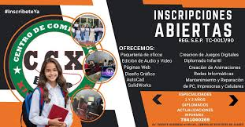

Misión
Brindar una educación integral en informática, formando estudiantes con habilidades técnicas y pensamiento crítico.
Clave de la escuela: 21DCT0000X

Cursos y asesorías para todas las edades.
El Centro de Cómputo Xicotepec (CCX) es un espacio que facilita el acceso a computadoras, software profesional y capacitación en áreas digitales. Nuestro objetivo es Brindar una educación integral en Informàtica, formando a estudiantes con las herramientas y conocimientos necesarios para destacar en un mundo en constante cambio. Nos comprometemos a ofrecer un ambiente inclusivo y práctico, dónde cada alumno desarrolle habilidades técnicas y pensamiento critico para su éxito profesional Visión Ser escuela líder en educación a nivel regional, y/o estatal, reconocidos por innovar en métodos de enseñanza y por preparar a los estudiantes para ser líderes en la industria tecnologica, formando profesionales calificados que impulsen la transformación digital en su entorno social. Formar profesionales competentes en informàtica y tecnología capaces de enfrentar retos del mundo digital, mediante una educación integral que combine conocimientos teóricos y prácticos."

Brindar una educación integral en informática, formando estudiantes con habilidades técnicas y pensamiento crítico.
Ser una institución líder en educación tecnológica a nivel regional.
Formar profesionales competentes capaces de enfrentar los retos del mundo digital.
Mantenimiento de PCs, laptops, celulares y tablets.
Word, Excel, PowerPoint y más.
Audio, video e imágenes.
HTML, CSS y JavaScript.
Photoshop, Illustrator y Canva.
AutoCAD y SolidWorks.
Curso orientado a la creación de sitios web funcionales y responsivos.
Capacitación en creación de contenido visual profesional.
Curso enfocado en la creación de modelos y planos tridimensionales.
Uso eficiente de Word, Excel y PowerPoint.
Diagnóstico y mantenimiento preventivo de equipos de cómputo.
Edición de audio, video e imágenes digitales.

Facebook: Centro de Cómputo Xicotepec
Inscripción en línea👉 Realiza tu inscripción en línea aquí
Dirección: Av. Vicente Guerrero #109 Col. Centro de Xicotepec
Teléfono: +52 764 104 0269